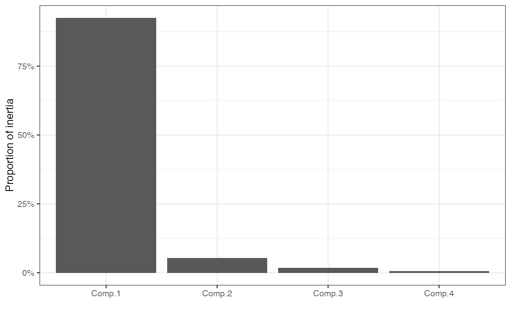

Functionality for principal components analysis ('princomp') objects
methods-princomp.RdThese methods extract data from, and attribute new data to,
objects of class "princomp" as returned by stats::princomp().
# S3 method for princomp as_tbl_ord(x) # S3 method for princomp recover_rows(x) # S3 method for princomp recover_cols(x) # S3 method for princomp recover_inertia(x) # S3 method for princomp recover_coord(x) # S3 method for princomp recover_conference(x) # S3 method for princomp augmentation_rows(x) # S3 method for princomp augmentation_cols(x) # S3 method for princomp augmentation_coord(x)
Arguments
| x | An ordination object. |
|---|
Author
Emily Paul
Examples
# Scaled PCA of Anderson Iris data with centroid stars iris[, -5] %>% princomp(cor = TRUE) %>% as_tbl_ord() %>% mutate_rows(species = iris$Species) %>% mutate_cols(measure = gsub("\\.", " ", tolower(names(iris)[-5]))) %>% print() -> iris_pca#> # A tbl_ord of class 'princomp': (150 x 4) x (4 x 4)' #> # 4 coordinates: Comp.1, Comp.2, ..., Comp.4 #> # #> # Rows: [ 150 x 4 | 1 ] #> Comp.1 Comp.2 Comp.3 ... | species #> | <fct> #> 1 -2.26 0.480 0.128 | 1 setosa #> 2 -2.08 -0.674 0.235 ... | 2 setosa #> 3 -2.36 -0.342 -0.0442 | 3 setosa #> 4 -2.30 -0.597 -0.0913 | 4 setosa #> 5 -2.39 0.647 -0.0157 | 5 setosa #> # … with 145 more rows #> # #> # Columns: [ 4 x 4 | 1 ] #> Comp.1 Comp.2 Comp.3 ... | measure #> | <chr> #> 1 0.521 0.377 0.720 | 1 sepal length #> 2 -0.269 0.923 -0.244 ... | 2 sepal width #> 3 0.580 0.0245 -0.142 | 3 petal length #> 4 0.565 0.0669 -0.634 | 4 petal widthiris_pca %>% ggbiplot(aes(color = species), sec.axes = "cols", scale.factor = 3) + theme_bw() + scale_color_brewer(type = "qual", palette = 2) + stat_rows_star(alpha = .5, fun.center = "mean") + stat_rows_center(size = 3, fun.center = "mean") + geom_rows_point(alpha = .5) + geom_cols_vector(color = "#444444") + ggtitle( "Row-principal PCA biplot of Anderson iris data", "Segments connect each observation to its within-species centroid" )# Unscaled PCA and two-scaled biplot of Anderson iris data iris[, -5] %>% princomp() %>% as_tbl_ord() %>% confer_inertia(1) %>% mutate_rows(species = iris$Species) %>% mutate_cols(measure = gsub("\\.", " ", tolower(names(iris)[-5]))) %>% print() -> iris_pca#> # A tbl_ord of class 'princomp': (150 x 4) x (4 x 4)' #> # 4 coordinates: Comp.1, Comp.2, ..., Comp.4 #> # #> # Rows: [ 150 x 4 | 1 ] #> Comp.1 Comp.2 Comp.3 ... | species #> | <fct> #> 1 -2.68 0.319 0.0279 | 1 setosa #> 2 -2.71 -0.177 0.210 ... | 2 setosa #> 3 -2.89 -0.145 -0.0179 | 3 setosa #> 4 -2.75 -0.318 -0.0316 | 4 setosa #> 5 -2.73 0.327 -0.0901 | 5 setosa #> # … with 145 more rows #> # #> # Columns: [ 4 x 4 | 1 ] #> Comp.1 Comp.2 Comp.3 ... | measure #> | <chr> #> 1 0.361 0.657 0.582 | 1 sepal length #> 2 -0.0845 0.730 -0.598 ... | 2 sepal width #> 3 0.857 -0.173 -0.0762 | 3 petal length #> 4 0.358 -0.0755 -0.546 | 4 petal widthiris_pca %>% ggbiplot(aes(color = species), sec.axes = "cols", scale.factor = 3) + theme_bw() + scale_color_brewer(type = "qual", palette = 2) + geom_rows_point() + geom_cols_vector(color = "#444444") + geom_cols_text_radiate(aes(label = measure), color = "#444444") + ggtitle( "Row-principal unscaled PCA biplot of Anderson iris data", "Variable loadings scaled to secondary axes" ) + expand_limits(y = c(-1, 3.5))